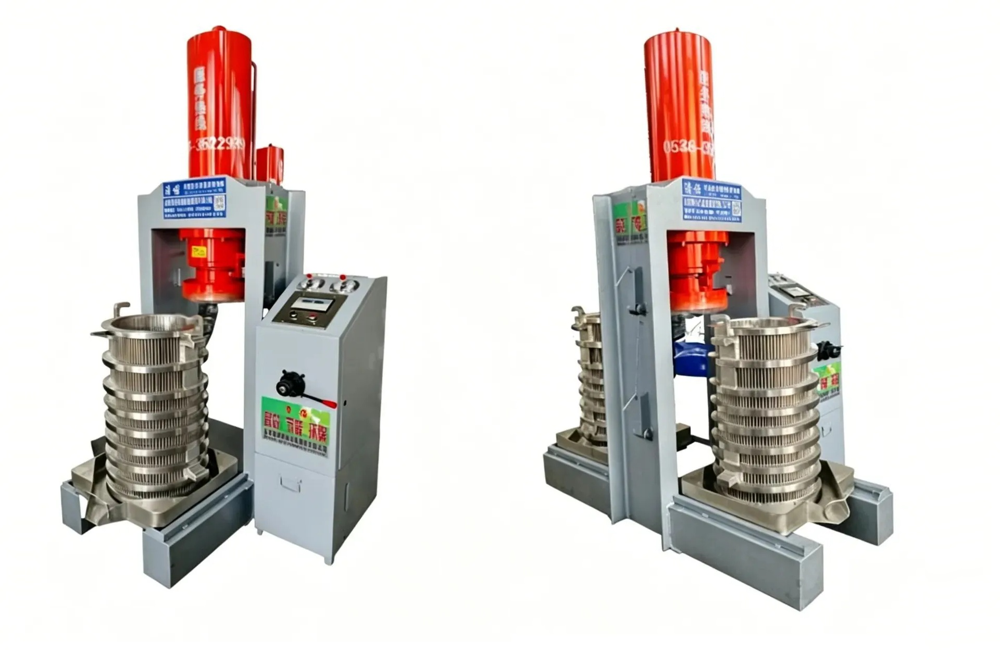

Hydraulic Oil Presses8 MODELS
Mini Hydraulic Oil Press

300-ton hydraulic oil press for small factory production. 25 MPa cake pressure, 55–60 kg per batch. Compact 390mm tabung press for sesame, peanut, rapeseed, or sunflower seed. 2.2 kW motor, factory-direct, 1-year warranty.
| System Pressure | 60 MPa |
| Pressing Force | 300 Tonnes |
| Motor Power | 2.2 KW |
| Machine Weight (Single/Double) | 1,2 / 1,5 Tonnes |
| Cylinder Outer Diameter | 300 mm |
| Piston Inner Diameter | 240 mm |
| Tabung Press Standard Inner Diameter | 390 mm (customizable) |
| Tabung Press Standard Height | 800 mm (customizable) |
| Cylinder Standard Stroke | 850 mm (customizable) |
Standard Hydraulic Oil Press

325-ton hydraulic oil press for small workshops and starter oil mills. 20–100 kg per batch, 27 MPa cake pressure. Hot or cold pressing of peanut, sesame, rapeseed, tea seed, sunflower, or flaxseed. Compact footprint, factory-direct pricing, 1-year warranty.
| Pressing Force | 325 Tonnes |
| Cake Surface Pressure | 27 MPa (Ø390 tabung press) |
| Hydraulic System Pressure | 60 MPa |
| Tabung Press Diameter | Ø390 mm standard (customizable) |
| Tabung Press Height | 800 mm standard (customizable) |
| Piston Stroke | 850 mm |
| Batch Capacity | About 20–100 kg per batch (100 kg max, crushed seed) |
| Power | 380V / 50Hz (415V optional) |
| Motor Power | 2.2 KW |
Commercial Hydraulic Oil Press

365-ton hydraulic oil press for medium to large commercial operations. 30 MPa cake pressure, single or double tabung press. Hot or cold pressing of peanut, sesame, rapeseed, tea seed, walnut, or soybean. Vertical structure, manual or semi-automatic, factory-direct.
| Rated Pressing Force | 365 Tonnes |
| Cake Surface Pressure | 30 MPa |
| Frame | 3 cm high-strength steel plate |
| Structure | Vertical, single or double tabung press |
| Working Mode | Manual / Semi-automatic, switchable |
| Pressing Process | Hot pressing and cold pressing |
| Motor Starting | Star-delta (Y-Δ) reduced-voltage start |
| Tabung Press Configuration | Single or double station |
| Applicable Seeds | Peanut, sesame, rapeseed, camellia (tea) seed, walnut, flaxseed, sunflower, soybean, almond |
Cold Press Hydraulic Oil Press

500-ton hydraulic press purpose-built for cold-pressing premium oils. 70 MPa system pressure, 42 MPa cake pressure. Low-heat extraction for coconut VCO, walnut, almond, or flaxseed. Hot pressing also supported. Single or double tabung press, factory-direct.
| System Pressure | 70 MPa |
| Pressing Force | 500 Tonnes |
| Motor Power | 2.2 KW |
| Machine Weight (Single/Double) | 2,4 / 2,7 Tonnes |
| Cylinder Outer Diameter | 426 mm |
| Piston Inner Diameter | 320 mm |
| Tabung Press Standard Inner Diameter | 390 mm (customizable) |
| Tabung Press Standard Height | 800 mm (customizable) |
| Cylinder Standard Stroke | 850 mm (customizable) |
Ultra High Pressure Hydraulic Oil Press

620-ton industrial hydraulic oil press for the hardest in-shell materials. 75 MPa system pressure, 52 MPa cake pressure. Presses in-shell walnut, apricot kernel, copra, or palm kernel. Single or double tabung press, heavy-duty steel frame, factory-direct.
| System Pressure | 75 MPa |
| Pressing Force | 620 Tonnes |
| Motor Power | 2.2 KW |
| Machine Weight (Single/Double) | 3,5 / 3,88 Tonnes |
| Cylinder Outer Diameter | 500 mm |
| Piston Inner Diameter | 360 mm |
| Tabung Press Standard Inner Diameter | 390 mm (customizable) |
| Tabung Press Standard Height | 800 mm (customizable) |
| Cylinder Standard Stroke | 850 mm (customizable) |
Sesame Oil Hydraulic Press

Purpose-built hydraulic press for sesame oil. 42-54% max yield, 47–51 MPa cake pressure from 300mm narrow tabung press.
| Motor Power | 2.2 KW |
| Cylinder Outer Diameter (325/355) | 325 / 360 mm |
| Cylinder Inner Diameter (325/355) | 260 / 280 mm |
| Cylinder Stroke | 850 mm |
| System Pressure (325/355) | 60 / 63 MPa |
| Cake Surface Pressure (325/355) | 47 / 51 MPa |
| Tabung Press Inner Diameter | 300 mm |
| Tabung Press Height | 800 mm |
| Machine Weight (325/355) | ~1,4 / ~2,1 Tonnes |
Coconut Milk Hydraulic Press

300-ton hydraulic press with 600mm food-grade stainless steel tabung. Purpose-built for coconut milk, coconut cream, and VCO extraction. Custom configuration for coconut-only operations, 30–45 working days lead time, factory-direct.
| Motor Power | 2.2 KW |
| Cylinder Outer Diameter | 300 mm |
| Cylinder Inner Diameter | 240 mm |
| Cylinder Stroke | 700 mm |
| Pressing Force | 300 Tonnes |
| System Pressure | 60 MPa |
| Cake Surface Pressure | 10.83 MPa |
| Tabung Press Inner Diameter | 600 mm |
| Tabung Press Height | 600 mm |
Sludge Dewatering Hydraulic Press

325-ton hydraulic press with 630mm large tabung for sludge and residue dewatering. Handles oil sludge, animal/plant oil residue, textile sludge, and fruit/vegetable pulp dehydration. Custom configuration, 30–45 working days lead time.
| Motor Power | 2.2 KW |
| Cylinder Outer Diameter | 325 mm |
| Cylinder Stroke | 850 mm |
| System Pressure | 60 MPa |
| Cake Surface Pressure | 10.64 MPa |
| Tabung Press Inner Diameter | 630 mm |
| Tabung Press Height | 1000 mm |
| Machine Weight (Single/Double) | ~2,5 / ~3,5 Tonnes |
| Equipment Dimensions (Single/Double) | 1400×2100×2900 / 2700×2100×2900 mm |